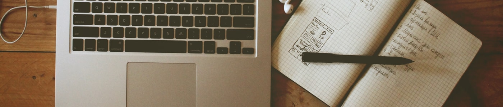

-
All is About Me
Curious maybe is killing you, but I were you I'll keep going.
-

Crossed in Your Mind
More and more, day by day, over and over again.
-

Engineer True Life
You never know what you gonna get.
F.A.Q
Frequent Ask Question and Information
-
Siapa Angga Ari Wijaya?
Aku? siapa aku? lama mencari jati diri akhirnya sadar bahwa Angga Ari Wijaya adalah seonggok daging, tulang,
cintadan jiwa. siapa aku? (lagi), Lahir di Gresik Jawa Timur, Indonesia tangga 26 Mei 1992, kira - kira 23 tahun yang lalu. Anak laki - laki biasa yang dibesarkan oleh orang yang bisa, tumbuh di lingkungan yang cukup normal tapi berkembang menjadi sedikit stupid dan awkward.. lho.. -
Bagaimana kehidupan sehari - harinya?
Seperti orang lain pada umumnya, aku makan dan bernafas untuk menyambung hidup, rutin *ek untuk menstabilkan jumlah racun tubuh dan melakukan aktivitas sehari hari seperti pergi ke kampus, kerja freelance, ngoding, stalking
cowokcewek (karena sekarangjomblosingle, kadang - kadang), ngetweet (kalo buka twitter), liat film/serial tv (kalo stress), nulis blog (kadang), baca buku (kalo pegang buku), ibadah teruspacaran(yang ini baca di kehidupan percintaan). Dulu suka gambar, pakai tangan (yaiyalah -_-), sekarang lebih sering gambar di komputer tapi gambarnya gak bagus bagus banget, dulu pengennya kuliah DKV. Dulu suka main game, sekarang sering belajar bikin game. Dulu suka cewek, sekarangsuka cowoktetep suka cewek.Kehidupanku #33333 (dark gray), hmm kenapa ndak merah, jingga, kuning, hijau, biru, nila, ungu, karena kalo itu pelangi. karena,, kehidupaku ndak seindah pelangi #halah.. Tapi kalo kita mengambil filosofi dari warna abu - abu adalah warna yang dapat meningkatkan dan menurunkan saturation warna yang lain eaaa.. mau cerita banyak, nanti update lagi :D. (hhhuuuuuuuu -__-) #pemirsa
-
Bagaimana kehidupan percintaannya?
Pertanyaan yang sensitif,, jarang cerita juga se,, haha, pertama pacaran tahun 2007 Desember tingkat pertama di SMK (kelas X) sama kakak kelas -_- beda sekolah, namanya (Li***in W.) selama 3 Tahun. Di tengah - tengah pernah selingkuh selama 2 minggu sama (D**i), what..? it's complicated.. yaapa ya njelasinnya (aah cowok emang brengsek..! lain kali cerita, tunggu update). Terus 1 tahun sama (R**ti) berakhir dengan aku diselingkuhin, (rasain dibales T_T tapi... tapi.. tapi.. ah ndak usah banyak alasan). Kemudian 3 hari sama (F**a), what.. karena aku kasian...,(semua cowok emang bajingan #setuju...). Dan sekarang teretet..teretet.. aku ndak laku lagi :( kayak batman, kesepian dan sibuk menjaga kedamaian dunia bedanya bruce wayne ningrat, aku mlarat.
-
Dia sekolah dimana?
Dulu TK di Dharmawanita (cupu banget nama TK-nya), biarin dah emangnya dulu aku bisa milih TK sendiri?, orang TK aku masih *ek di celana, ups. SD di
SingoedanSingosari, nah lho kurang keren apa coba nama SD nya, ini SD satu kampung jadi deket rumah,, tinggal jalan bentar nyampek, ada di RT 2 kalo gak salah, rumahku RT 6. Terus SMPN 4 Gresik, ini nih banyak kenangan.. halah, sering dihukum gara - gara gak ikut pramuka waktu kelas 1, (trauma pramuka pas SD), ikut OSIS pas kelas 2, anggota seksi keagamaan, kelas 3 jadi koordinator seksi keagamaan (ndak percaya kan, tapi beneran kok), anggota osis wajib jadi petugas upacara di hari khusus. posisi pas upacata bendera ndak tau kenapa aku selalu kompi 3 (barisannya anak kelas 3), jadi pas kelas 2 sering grogi kalo nyiapin anak kelas 3 wkwkw. terus lanjut ke SMK Semen Gresik (Arek STM), aku masuk jurusan Mekanik Otomotif, cowok semua, kalo ndak ada gurunya jadi kelas TK kalo gak gitu pada ngajakin pulang, terus besoknya dihajar sama guru bengkel. FYI aku dulu jagoan :p, percaya ngga'? ndak pasti. Ikut extra Ju-Jitsu selama 3 tahun, jadi ketua Dojo, yah sebenernya karena anggotanya dikit jadi terpaksa aku :D yang memimpin mereka menuju jalanninjajujitsan sejati. FYI again, Jujitsu itu bela diri dari jepang, cukup tua umurnya dibanding karate, merupakan parent dari aikido dan hapkido, aku dulu sabuk oranye berarti kyu 3. Lanjut kuliah di Universitas Jember jurusan Sistem Informasi, disini balik jadi anak baik baik kayak waktu SMP, lho jurusannya kok gak nyambung sama SMK, emang nape?? masalah? gue bisa jujitsu ni.. :p -
Apa tujuan hidupnya?
Hmm disini aku ndak akan menjawab dengan sudut pandang agama, bagian itu disimpan di hati saja, kita ngomong yang simple aja. Tujuan hidupku adalah menguasai dunia (ini mimpi waktu pas SD sering liat karakter antagonis di anime). lain kali update ceritanya.
-
Siapa orang yang menginspirasi hidupnya?
Bapak, dia disiplin dan pekerja keras, mentor hidupku, walaupun diumurku yang sekarang cara pikirku banyak yang bertentangan dengan beliau. Tapi yah inilah akhirnya aku yang hidup dengan reputasi beliau. Tetsuya Nomura seorang character design dari Square Enix, dia yang memberiku mimpi dan membuat tanganku terus memegang pensil untuk menggambar dari SD hingga SMP. Nabi Muhammad SAW yang membuat aku masih memiliki kepercayaan dan terus belajar, sesungguhnya aku bukan orang yang terlalu mengerti agama, selama ini mungkin aku hanya hidup dengan menggugurkan kewajibanku saja sebagai seorang muslim tanpa mengetahui arti sesungguhnya dari apa yang aku lakukan, tapi I'm working on it. Kalo ilmu agamaku lebih baik nanti tak pindah ke atas.
-
Apa cita - citanya waktu kecil?
Kanzen Kankaku Dreamer, banyak banget mimpiku sejak kecil, yah walaupun gak konsisten dan selalu berubah-ubah, tapi percayalah bermimpi dapat menjauhkanmu dari gak ada kerjaan diwaktu luangmu, gak ada putus asa bunuh diri dan gak ada malas dihidupmu dan mungkin suatu hari kamu akan hidup dengan passionmu, tidak ada pekerjaan yang lebih menyenangkan selain hobi yang dibayar kan. Sesuatu yang tidak dipaksakan, sesuatu yang kamu suka yang tidak kamu anggap sebagai pekerjaan. Aku pernah bercita - cita menjadi Astronot (setelah kelas 3 SD ada pelajaran IPA bab tata surya), Pilot, Pembalap, Tentara (setelah main game delta force dan liat film Black Hawk Down), Pemadam Kebakaran (menurutku aksinya heroik), Mangaka (aku suka anime), Animator (berkembang dari mangaka), Game Developer (menantang diri sendiri dengan sesuatu yang sulit), seorang suami (setelah sadar udah mulai tua).
-
Apa fakta lainnya tentang Angga?
Aku,,udah makan banyak tapi beratku ndak pernah keluar atau turun dari 50-53 Kg, aku kalo tidur kadang matanya bukak atau ngiler (kalo capek aja), suka hal yang tertata rapi, jarang punya uang banyak, suka hubungan LDR, sering memperhatikan dan tertarik tentang tingkah laku manusia, sering nyatpam (bergadang) gara - gara kuliah. Ndak punya banyak teman but it's okay. Kadang - kadang bersikap seperti superhero -_- dan sok cool (habis nyelesaiin masalah terus ditinggal, belakang meledak). Suka ngumpulin nota indomart dan struk ATM (aneh?, emang). Suka ngomong sama diri sendiri (semua orang sering melakukannya juga), suka berkhayal tapi aku ndak pernah ngaku ke orang, banyak aib di pikiran ini. ngaku ke diri sendiri you're number 1 (semua cowok dengan pride yang ada dirinya melakukan hal normal ini, padahal.. -_-). Gak suka *ek pake WC duduk, dan pipis di tempat model orang luar cowok (apa sih namanya tu). Gak pernah minum minuman keras, aku milih teh anget :D, belum pernah melakukan hubungan sex sebelum ini, rokok? pernah nyoba 1 batang pas SD kelas 6, kemudian 2 lagi pas kelas 1 SMP tapi bukan perokok. apa lagi ya,,banyak yang pengen aku kasih tau tapi ntar update lagi ya.
-
Bagaimana mengenal dan menghubungi dia?
Lihat di halaman contact ya, atau di footer juga ada. Walaupun jarang pake photo asli di socmed tapi kalo pengen liat wajah aslinya dateng aja kerumahnya. Gak jelek - jelek amat, tapi jangan ngarep kayak Chris Hemsworth, Hyun Bin, Bi Rain, Lee Seung Gi, Tom Cruse, Brad Pit, Johnny Depp.
-
Kenapa Angga introvert?
Karena angga bukan extrovert, hei aku juga punya bagian itu, semua orang juga punya keduanya, hanya saja saat ini introvert lebih dominan, makannya datang kerumah biar tau :p.
-
Bagaimana pandangan orang lain tentang dia?
People: Siapa, Angga? ohhh angga itu..
Aku: .__. siapa?
People: Angga kan?
Aku: YANGG NANYYAAA!
Curious About This Man
Send your question about him